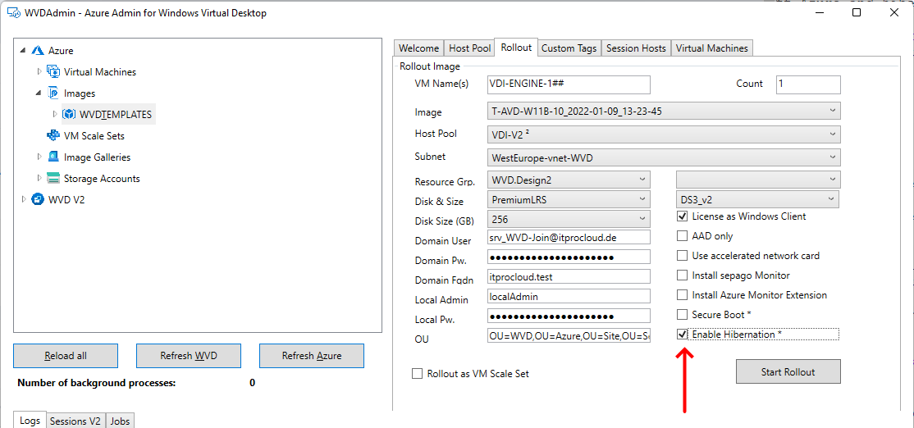
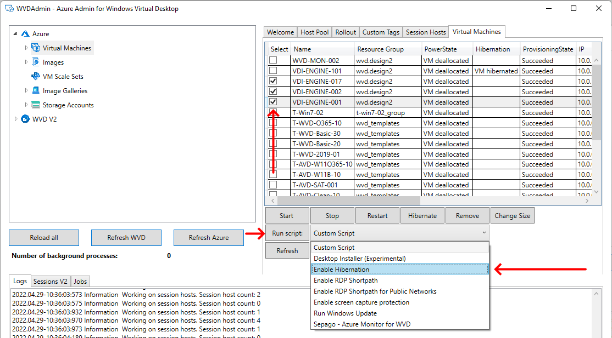
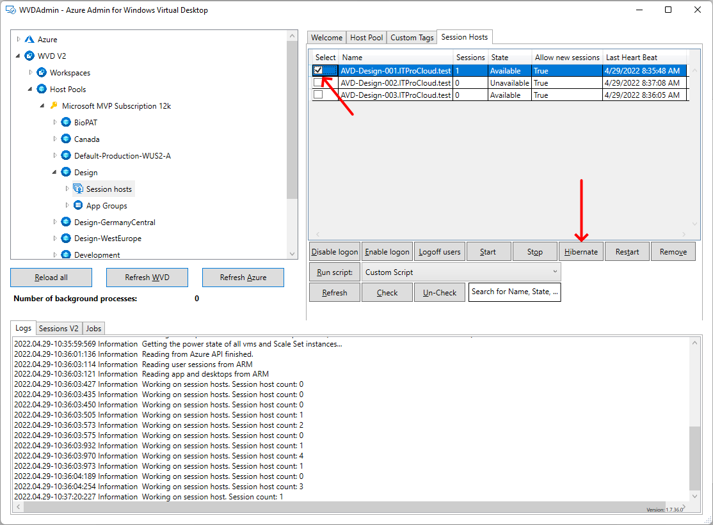
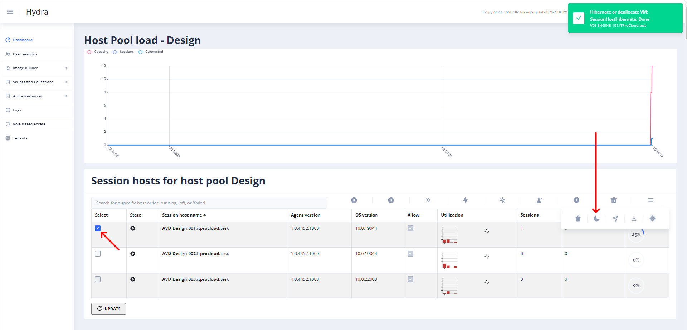
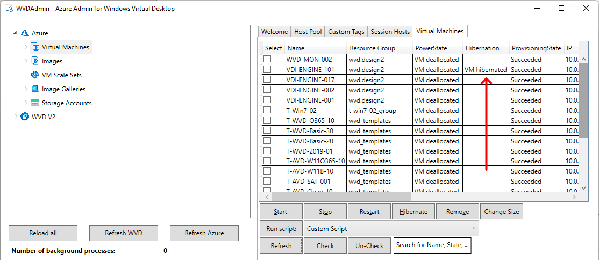
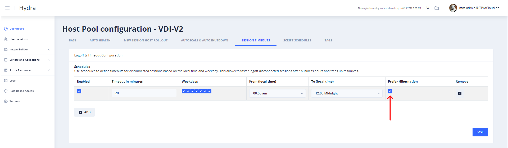
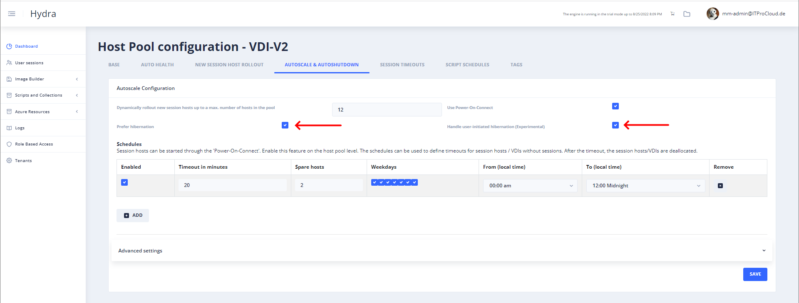

Microsoft Azure and hibernated Virtual Machines and Azure Virtual Desktop Hibernation
Microsoft introduced a new feature for Virtual Machines: Hibernation (link to MS post). That is awesome and allows totally new scenarios, not even for Azure Virtual Desktop. But used with Azure Virtual Desktop, hibernation gives new possibilities to provide desktop. I certainly don't need to mention that a hibernated VM has no compute costs.
Thanks a lot to Microsoft and the AVD product group for the invitation to the private preview and the encouragement to adapt my products accordingly.
How does hibernation work in Azure? 
The possibility of hibernation can be configured during the rollout of new virtual machines (Gallery Images) or for existing virtual machines. For both cases: The VM type must support hibernation, and the OS disk must be large enough to store the OS, the pagefile, and the hibernation file (size of the memory). For existing VMs, the pagefile must be moved to C: before. For VMs or AVD session hosts, you can use the free #WVDAdmin tool to convert existing VMs or rollout new VMs (tick the checkbox). In both cases, the page file is moved to C: automatically.  
A VM or session host can be hibernated with #WVDAdmin or #Hydra.  
The Virtual Machines note in #WVDAdmin shows the hibernation mode of a VM. 
Important to know: You can not modify the disk of a hibernated VM. That includes not changing the disk type to HDD after the deallocation (that can be configured using Hydras' autoscaling). Hint: I guess I found a way to do both. I would update this post if I validated this.
Hibernation for AVD personal hosts
VDI users have the highest benefit from using hibernation. After the work is done, they can hibernate the host and continue working later while all the applications stay open. Currently, the Microsoft AVD autoscaling cannot support the user with hibernation. If you are using Hydra, you can configure hibernation for VDI: Configure a timeout for a disconnected session and tic the box "Prefer hibernation" (the VM must support hibernation; convert an existing VM with #WVDAdmin): 
If the user disconnect, the session host will be hibernated by Hydra. If the user tries to reconnect (e.g., with Power-On-Connect), the VM starts, and the user can continue.
Additionally, tick the two boxes "Prefer hibernation" and "Handle user-initiated hibernation (Experimental)" in Autoscale and Autoshutdown to allow a user with the proper rights to hibernate inside of Windows. In this case, Hydra ensures that the VM goes into the correct hibernation mode. 
Hibernation for AVD pooled hosts
Awaking a VM is in the physical world faster than starting Windows. So it could make sense to prefer hibernation to bring hosts down if they are no longer needed and awake the hosts on demand. Hydra also allows autoscaling with hibernation if you tick "Prefer hibernation" in Autoscale and Autoshutdown. But how big is the speed advantage? I did some measurements to figure this out. For this case, I used a VM (DS3 v2), 256 GByte OS-disk and did several starts with several options.
In every scenario, I measured three values: - X: Seconds to bring the VM from deallocated to running - Y: Seconds from deallocated to be available in AVD - Z: Seconds to deallocate/hibernate the VM
Scenario 1: Hibernated VM (withou session), OS-disk is HDD
| x: deallocated to running | y: deallocated to be available | z: hibernate | |
|---|---|---|---|
| 1 | 18 | 86 | 64 |
| 2 | 18 | 80 | 63 |
| 3 | 18 | 87 | 64 |
| 4 | 17 | 83 | 64 |
| 5 | 17 | 81 | 51 |
| 6 | 8 | 94 | 69 |
| Avg: | 17.7 | 85.2 | 62.5 |
Scenario 2: Hibernated VM (withou session), OS-disk is Premium
| x: deallocated to running | y: deallocated to be available | z: hibernate | |
|---|---|---|---|
| 1 | 26 | 49 | 45 |
| 2 | 17 | 56 | 59 |
| 3 | 21 | 56 | 61 |
| 4 | 26 | 55 | 44 |
| 5 | 39 | 72 | 48 |
| 6 | 17 | 56 | 44 |
| Avg: | 24.3 | 57.3 | 50.2 |
Scenario 3: Deallocated VM, OS-disk is HDD
| x: deallocated to running | y: deallocated to be available | z: deallocate | |
|---|---|---|---|
| 1 | 17 | 117 | 40 |
| 2 | 20 | 119 | 44 |
| 3 | 16 | 113 | 44 |
| 4 | 15 | 102 | 39 |
| 5 | 15 | 110 | 50 |
| 6 | 21 | 111 | 67 |
| Avg: | 17.3 | 112 | 47.3 |
Scenario 4: Deallocated VM, OS-disk is Premium
| x: deallocated to running | y: deallocated to be available | z: deallocate | |
|---|---|---|---|
| 1 | 20 | 81 | 44 |
| 2 | 20 | 77 | 43 |
| 3 | 13 | 85 | 36 |
| 4 | 49 | 113 | 37 |
| 5 | 23 | 82 | 45 |
| 6 | 18 | 42 | 38 |
| Avg: | 23.8 | 80 | 40.5 |
The time for a hibernated host to become available in AVD is 23% faster than starting a deallocated host.
Hibernation is 23% faster than the deallocation and allocation of a VM or session host. While you need bigger OS disks for hibernation and while you cannot use Hydras' advantages of switching disk types (to HDD after deallocation and to premium before starting a host). So, it's up to you to use hibernation for pooled hosts. I would go the start/stop way for pooled hosts to continue using smaller disks and the HDD-type switching feature. But for personal / VDI hosts, it can make absolute sense: It's an excellent user experience for the end-users.
Fazit:
As I mentioned before, I'm thrilled to be involved in the preview to prepare my tools and solutions around AVD. Hibernation is fantastic and, especially for personal host pools, a great experience. Feel free to check out my tools (I only list the new features around hibernation):
WVDAdmin - my free community solution to work with AVD - Hibernate and awake session hosts - Hibernate and awake VMs - Rollout session hosts based on a custom image with hibernation enabled - Reconfigure suitable VMs to use hibernation - List all VMs and show the hibernation state
Hydra - free for up to 6 hosts per pool - Hibernate and awake session hosts / VMs - Next week: Rollout session hosts based on a custom image with hibernation enabled - Autoscaling with "Prefer Hibernation" for pooled hosts - Autoscaling with "Prefer Hibernation" for VDIs (preserves the user session) - Hibernates a VDI after a session is disconnected for a while - Hibernates a VDI after a user-initiated hibernation inside of Windows
Please let me know what you think about using hibernation in AVD.